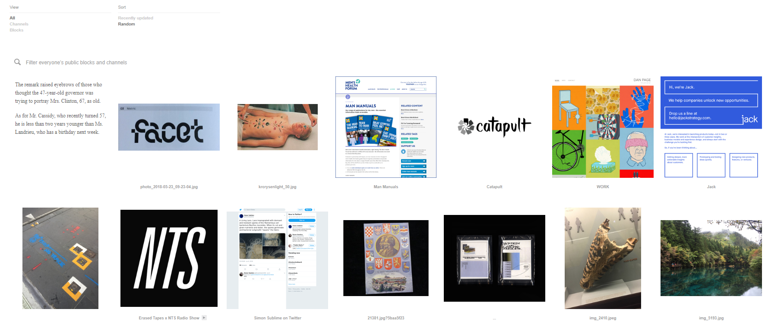

> Epistemic status: Here is a new tool that might be useful,
considering what is going on with Tumblr. It seems that the only mainstream social media site that is decent at the moment is Twitter. This is mainly because the main virtue of Twitter is it can be a great resource for finding interesting topics and articles to think about. However, using Twitter as a tool for information hunting is not quite what the platform is intended for. However, it turns out there is a social media platform called Are.na that is designed for this purpose.
From the about page of Are.na.
As an aside, look, Markdown supports iframe videos, pretty neat, huh?Are.na, founded in 2014, is a rather interesting social media platform. Instead of liking posts, one instead finds and uploads content from pictures to links. One first creates channels which have a theme, such as climate change or interesting designs. Then, one uploads various types of content as blocks to the channels you or other people make.
The feeds can be on any topic, but many channels are related to art/design, which is because of the founders of Are.na mainly came from art world adjacent circles. The design reflects this as well, as the minimalist black and white web design is meant to highlight the actual blocks being displayed. A screen snippet as a reference.

As another side note, some of the people behind
Are.na were the people who created K-Hole.
They were a very interesting
trend forecasting group that accidentally invented
the concept of normcore. Channels then act as ways to organize thinking. To add to the networked nature of the site, one can connect channels to other channels, creating networks of information connected to each other by linking to the various blocks.
One can follow people as well, but you can also follow channels as well. One could follow the channel man made climate change or Augmented Me for example, and your feed would be filled with content from those channels as they arrive.
Beyond that, there are other features someone from Tumblr or anyone would find useful. The timeline in Are.na is chronological, so there are no algorithms changing the order you see content displayed on your feed. Comments are also not really a thing, so the idea of having a flame war on Are.na is unlikely.
At least for me, Are.na has proven to be a great change of pace compared to other social media. It is pleasant to have a a feed that instead of filled with anger, it is filled with interesting designs are articles. It also shows that many people are good at curating content in general!
Wherever you are a Tumblr refugee or someone on the hunt for new ideas, I think Are.na will have a rather bright future in the newer iterations of social media. One that emphasis less engagement that is actually screaming, but more curating and creating communities.